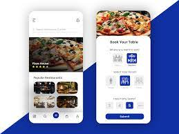

an data analytics graduate in Temasek Polytechnic (TP) that specialize in data science and programming.
During my secondary times, i joined infocomm club as my CCA since then, i was fascinated by the IT World. I continued my education in ITE Higher Nitec as an application developer.
During My ITE times, i was impressed by how alphago (An AI that was developed by google) beat a world champion in go/weiqi. since then, i was determine to pursue my career in AI development. Since TP was near my house . it will not be hustle to travel And, I took up a course that is related to AI which is Big data and analytics.
In my course, i found my new strength which is data science which let me explore data, find problems via machine learning and manual visualizations.Thus,giving suggestion to solve the problems. Now, continuing the next part of journery, to serve the part of journery to serve the nation.

As more resturant adopts transformation, resturant begins to adopt digital stock-taking and online delivery. With just a few clicks, users can explore a world of gastronomic delights, secure their reservations, and look forward to memorable moments in the company of good food and good company.
Check it Out
As the rise of scammer via SMS and whatsapp, AI filtering for spammer and scammer becomes more essential. SMS filters often employ a set of rules or algorithms to analyze the content, sender information, or other attributes of incoming texts. By doing so, they can identify and segregate spam messages, promotional content, or messages from unknown or blacklisted contacts.
Check it Out
Digital Art is fascinating area to explore. Some of digital art is display at website to make it sophicated or being display in immersive art display. Using algorithm,software,design and code to create particle motion animation. By changing a minor part of the size, algorithm and variables, numberous amount of particles animation can be changed.
Check it OutRSAF55 Beach Cleaning